Overdrive & Distortion
Cognate Bitcrush Manual
Version v1.10 · 06/04/2026
Overdrive & Distortion
Version v1.10 · 06/04/2026
| Category | Overdrive & Distortion |
| Channels | Mono in / mono out |
| Version | 1.10 (06/04/2026) |
Cognate Bitcrush is a gritty, lo-fi sculptor for everything from clean 8-bit nostalgia to full digital destruction. It pairs the two classic ingredients — sample-rate reduction and bit-depth reduction — with a unique Blocks mode that re-imagines JPEG-style lossy artefacts as a bass effect, plus a tilt EQ, blend control, and a menu of stranger digital glitches that twist the bits and bytes in ways you won't have heard from a normal crusher. Drop the rate to chase aliasing and 80s sampler crunch; drop the bits for gated digi-fuzz; crank Blocks for cleaner sci-fi crunch; or sweep the lot with the envelope follower and LFO for movement and growl.
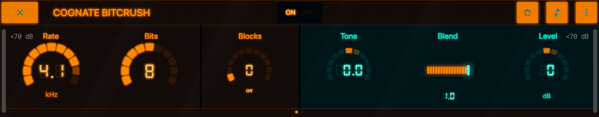
Page 1 of 2
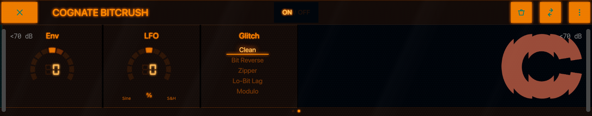
Page 2 of 2
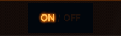
Turns off the bit-crushing and passes your bass's signal directly through to the next block in the signal chain. The plugin stays in your preset so you can switch the effect in and out without re-loading anything.
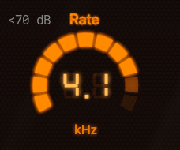
Sets the sample rate the plugin downsamples your bass to. Lower values fold high frequencies back as audible aliasing — the same trick that gave 80s samplers their distinctive crunchy distortion. At the top of the range it's nearly transparent; in the middle you get warm, gritty character; near the bottom it disintegrates into bright metallic noise. This is the most expressive control on the plugin — assign it to an expression pedal and sweep from clean to ruin.
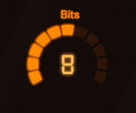
Reduces the bit depth the bass is quantised to. At 16 bits it's clean; as you drop, quiet detail starts to step rather than slide, and the bass takes on a gritty, gated character. Below about 4 bits it becomes a digi-fuzz — the quietest part of every note clamps to silence and only the loudest peaks make it through. Pairs especially well with Rate at low values for a full vintage-sampler sound.
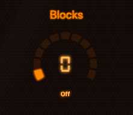
0 = "Off"A unique third destruction mode, inspired by the way JPEG compression artefacts blocky-ify a low-bitrate image. Instead of stepping the signal in time (Rate) or amplitude (Bits), Blocks groups samples into blocks and processes them as units, producing a cleaner, more controlled crunch with a sci-fi edge. Setting Blocks to Off (0) disables it. As you crank it up the artefacts become broader and more rhythmic — useful when you want lo-fi character without giving up note definition.
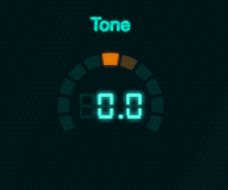
A tilt EQ that shapes the distortion coming out of the crusher. At 0 it's flat. Turn negative to roll off the brittle top end and emphasise low-mid grit (better for stacking onto an already-bright signal). Turn positive to brighten and add the metallic sparkle that bit-crushed bass is loved for. Tilt EQs are gentle and musical — they let you change the colour of the artefacts without scooping the bass underneath.
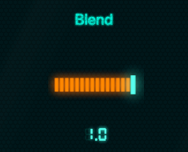
Mixes the crushed signal against your dry bass. At 1.0 you hear the effect alone — full devastation. Pull it back and the dry bass underpins everything, with the crusher acting as an upper layer of crisp, brittle edge. A common setting for a usable lead-bass tone is around 0.3–0.5: enough crushed signal to add character without losing the body of the note.
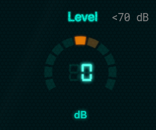
Output trim. Bit-crushing changes perceived loudness — heavy crushing can make a signal feel quieter even though peaks are higher, and very mild settings can push the output hot. Use Level to match the bypassed and engaged volumes so kicking the effect on doesn't jump the mix.
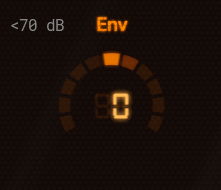
An envelope-follower modulation that ties the Sample Rate to the dynamics of your playing.
Negative settings are where the fun is: dig in for a harder note and the bit-crusher snarls back at you.
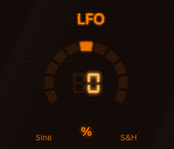
A low-frequency modulation that sweeps the Sample Rate automatically. Bipolar — positive values use a smooth sine, negative values use a stepped random pattern. At 0 the LFO is off. Small amounts add gentle movement and stop the crusher sounding static; larger amounts produce obvious wobble (sine) or unpredictable digital chatter (random). Useful for sustained notes that would otherwise feel mechanical.
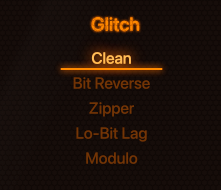
A menu of digital glitches layered on top of the basic Rate/Bits/Blocks crushing. Each one twists the bits and bytes in a different unconventional way that interacts with your bass signal — they're not subtle.
These are sound-design tools more than tone shapers — pick one, hold a note, and explore.